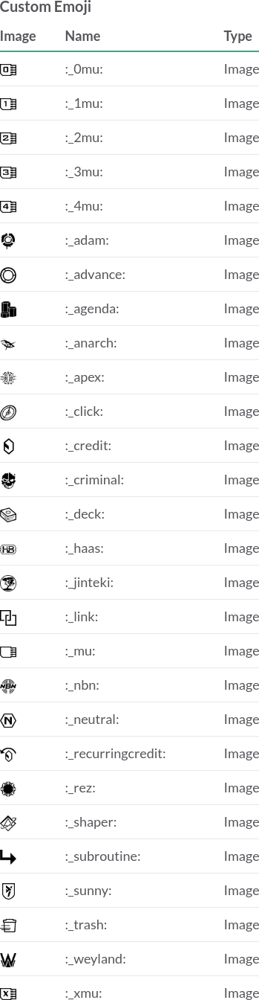

Deploy to Heroku
Deploy SanSan Messaging Grid to Heroku with one click:

This will create a new Node.js app running on Heroku's server. Take note of the URL of your app, you'll need it later.
Alternative Hosting
If you choose not to use Heroku, or you wish to deploy manually, you can pull the code from GitHub and host it yourself. Run the following command from a directory of your choice:
git clone github.com/frogamic/sansan-messaging-grid -b deploy
This will download the deploy branch of the repository to your local computer.
deploy branch since active development takes place on the master branch and stability is not guaranteed.
Add Slack Integrations
Once SanSan Messaging Grid is deployed and running, you must configure it as a Slack integration. Navigate to:
https://slack.com/apps/manage/custom-integrations
From this page, add the following integrations:
Outgoing WebHook
- Channel:
- Any
- Trigger Word(s):
- nrdb: You can change this if you prefer
- URL(s):
- [your app URL from earlier]
- Token:
- Not used
- Descriptive Label:
- NRDB Card trigger
- Customize Name:
- This is the username that the card information is posted to the channel by.
Our channel uses Dorm Computer
Outgoing WebHook
- Channel:
- Any
- Trigger Word(s):
- deck:,decklist: pick any number of commands seperated by commas
- URL(s):
- [your app URL from earlier]/decklist
- Token:
- Not used
- Descriptive Label:
- NRDB decklist trigger
- Customize Name:
- You can choose
Outgoing WebHook
- Channel:
- You must add this integration once for each channel that you want to have
[inline]searching - Trigger Word(s):
- Leave blank
- URL(s):
- [your app URL from earlier]
- Token:
- Not used
- Descriptive Label:
- NRDB inline card search
- Customize Name:
- Be Creative
Slash Command
- Command:
- /nrdb You can change this one too
- URL:
- [your app URL from earlier]
- Method:
- POST
- Token:
- Not used
- Customize Name:
- Our channel mixes it up a bit and uses Exile here
- Description:
- Show the text for a card from NetrunnerDB
- Usage Hint:
- [Card title or acronym]
- Descriptive Label:
- NRDB quiet card command
Slash Command
- Command:
- /deck Your wish is your command
- URL:
- [your app URL from earlier]/decklist
- Method:
- POST
- Token:
- Not used
- Customize Name:
- You could have your messages express delivered by Ken Tenma!
- Description:
- Show a decklist from NetrunnerDB
- Usage Hint:
- [Decklist URL or ID number]
- Descriptive Label:
- NRDB quiet decklist command
Add Custom Emoji
The final step to create the perfect Android: Netrunner experience on Slack is to add all the Netrunner emoji. Navigate to:
https://github.com/frogamic/netrunner-emoji
Click Download ZIP and unzip the file somewhere on your system.
To add the emoji to your Slack channel, navigate to the following settings page:
https://slack.com/customize/emoji
Add all the emoji that you just downloaded using their filename as the emoji name. It should look like this:
That's it! Your Slack team can now use SanSan Messaging Grid to talk about Netrunner.